Introduction
The CoDEC tabular-data-resource (TDR) specifications provide a set of patterns designed to make sharing tabular community-level data easier. Examples of this type of data include the pediatric hospitalization rate per month per census tract, the total number of gunshots per season per neighborhood, and the housing code enforcement density per year per ZIP code.
The specifications are built on top of the Frictionless Tabular
Data Resource and define a CoDEC TDR as a table of data with accompanying metadata. See the fr package for tools to
curate, read, and write frictionless TDRs in R. Within the {codec} R
package, use check_codec_tdr() to validate an existing TDR
against the CoDEC specifications (version 1.0.1).
Data
Data is specified as average values or total counts for census tract geographies during a specific year (or year and month). The required census tract identifer and year (or year and month) columns in a CoDEC TDR contain the spatiotemporal information that can be used to link other data.
Census Tract Identifier Column
A CoDEC TDR must include a census
tract column named census_tract_id_{year}, where
{year} is replaced with the decennial vintage of the census
tract geographies used to create the dataset (i.e.,
census_tract_id_2000, census_tract_id_2010, or
census_tract_id_2020).
The census tract identifier column MUST contain 11-digit GEOID
identifiers for all census tracts in Hamilton County (GEOID:
39061). A list of required census tract identifiers for 2000, 2010, and
2020 are available in the {{cincy}} R package
(e.g., cincy::tract_tigris_2010).
A CoDEC tdr that was not created at a census
tract level should link to a URL (using the homepage property) that contains code and
a descriptive README file about how the data was harmonized (e.g., areal
interpolation) with census tract geographies.
Year (and Month) Temporal Column(s)
Year (and month) temporal variables in a CoDEC TDR must be in a “tidy format” so that each row represents one observation in time. This allows for cumulatively updating data resources without changing field-specific metadata.
A CoDEC TDR must include a column called year that
contains only integers representing the year during which the data was
collected (e.g., 2018, 2023).
It also may contain a month column, in which case the
unique combination of the year and month
columns represent the calendar month during which the data was collected
(e.g., “2023” and “11” together represent November of 2023).
File Structure
Like all tabular-data-resources, a CoDEC TDR consists of a directory
that must contain exactly one data (.csv) file and one
metadata file named tabular-data-resource.yaml.
The name of the directory and the name of the CSV file containing the
data MUST be identical to the name property.
For example,
mydata
├── mydata.csv
└── tabular-data-resource.yamlBoth files must be encoded using UTF-8 with newlines encoded as
either \n or \r\n.
The data file must follow the RFC 4180 standard for CSV files. In addition:
- the filename must end with
.csv - the first row must be a header row, containing the unique
nameof each field - if a value is missing, it must be represented by either
NAor an empty string
The metadata file MUST be a YAML file
named tabular-data-resource.yaml adhering to the metadata
specifications.
Metadata
The metadata of a CoDEC tdr is represented as a
hierarchical list in a specific format. On disk, this metadata is stored
separately from the data as a tabular-data-resource.yaml
file.
The metadata of a CoDEC TDR is represented as a hierarchical list of properties :

Property
Each property (or “metadata property”) is a named value used to describe the data resource.
| name | value |
|---|---|
| profile | tabular-data-resource |
| name | identifer composed of lower case alphanumeric
characters, _, -, or .
|
| path | relative file path or URL of data file |
| version | semantic version of the data resource |
| title | human-friendly title of the resource |
| homepage | homepage on the web related to the data; ideally a code repository used to create the data |
| description | additional notes about the resource |
| schema | a list object containing items in schema |
Schema
The schema (or “table schema”) is a special property that is a list of information about the fields (or columns) in a tabular-data-resource.
| name | value |
|---|---|
| fields | a list object as long as the number of fields each containing the items in fields |
| missingValues | the string values that should be considered missing observations |
| primaryKey | a field or set of fields that uniquely identifies each row |
| foreignKeys | a field or set of fields that connect to a separate table |
Fields
fields (or “field descriptors”) is a special schema property that is a list of each of the fields in a tabular-data-resource, each with field-specific properties.
| name | value |
|---|---|
| name | machine-friendly name of the field |
| title | human-friendly name of the field |
| description | any additional notes about the field |
| type | Frictionless type of the field |
| constraints | Frictionless constraints, including enum,
an array of possible values or factor levels |
Example
An example CoDEC tdr looks like:
name: tract_poverty
path: tract_poverty.csv
title: Fraction of Census Tract Households in Poverty
version: 1.2.1
description: |
Measures derived from the 5-year American Community Survey.
Downloaded from (IPUMS NHGIS)[https://nhgis.org) and
converted to match 2020 census tract boundaries.
schema:
fields:
census_tract_id_2020:
name: census_tract_id_2020
title: Census Tract Identifier
description: 2020 vintage census tract identifier
type: string
year:
name: year
title: Year
type: number
fraction_poverty:
name: fraction_poverty
title: Fraction of Households in Poverty
type: numberThe CSV data file for this example CoDEC tdr would
contain values for all vintage 2020 census tracts in Hamilton County,
but only the first and last five are shown here:
year, census_tract_id_2020, fraction_poverty
2020, 39061021508, 0.057
2020, 39061021421, 0.031
2020, 39061023300, 0.030
2020, 39061002000, 0.098
2020, 39061002500, 0.442
... ... ...
2020, 39061021604, 0.259
2020, 39061024700, 0.062
2020, 39061026102, 0.154
2020, 39061023501, 0.046
2020, 39061009800, 0.391